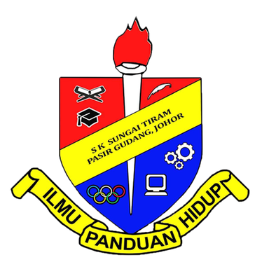

Sistem Carian Maklumat Murid
Sekolah Kebangsaan Sungai Tiram
Menghubungkan sistem…
Jika pelayar dalam WhatsApp atau aplikasi lain gagal membuka sistem, salin pautan dan buka menggunakan Chrome yang telah dikemas kini.

Sekolah Kebangsaan Sungai Tiram
Menghubungkan sistem…
Jika pelayar dalam WhatsApp atau aplikasi lain gagal membuka sistem, salin pautan dan buka menggunakan Chrome yang telah dikemas kini.